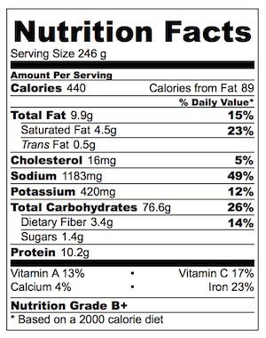

Aloo Paratha

Couple of Aloo parathas
Aloo paratha is a bread dish originating from India. It is a breakfast dish that is popular in the Indian subcontinent.
The recipe is one of the most popular breakfast dishes throughout the western, central and northern regions of India as well as the eastern regions of Pakistan
Ingredients
- Potatoes
- Spices
- Ghee
- Wheat
Procedure
- For cooking in a pressure cooker – On a medium flame, cook the potatoes in water for 3 to 4 whistles. When the pressure settles down naturally, remove the lid and drain the water. Allow the potatoes to cool enough to handle and then peel them.
- For cooking in a pan – Cover the pan and cook potatoes in water till fork tender. For this method, it helps to peel the potatoes and chop them in 2 inch cubes before boiling because they will cook faster than whole potatoes. Using a colander, drain all the water and allow the potatoes to cool.
- The potatoes should be mashed very well, with no lumps, chunks or bits. Any lumps in the mix will cause the stuffing to leak out of the dough when rolling.
- Now add the following ingredients, feeling free to vary the spices as you like.
- ½ to 1 teaspoon finely chopped green chillies (1 to 2 green chilies) or serrano peppers
- ¼ to ½ teaspoon punjabi garam masala powder or Garam Masala Powder
- ¼ to ½ teaspoon kashmiri red chilli powder or cayenne pepper or paprika (optional)
- ½ to 1 teaspoon dry mango powder (amchur powder) – or use lemon juice instead
salt according to your taste.
Nutritional content

Click here to return to index
Click here to return to Snacks
Click here to return to go dessert